Existing unsupervised cell segmentation methods cannot produce a single error-free instance, blocking any form of self-distillation. COIN closes this gap with a three-step pipeline that scores each predicted instance, keeps only the confident ones as pseudo ground truth, and recursively distills them. Without any annotations, COIN even surpasses semi- and weakly-supervised baselines.
Cell instance segmentation drives quantitative pathology, yet manual instance masks are prohibitively expensive at scale. Unsupervised methods sidestep labels but suffer one fundamental flaw: not one of their predicted instances is fully correct.
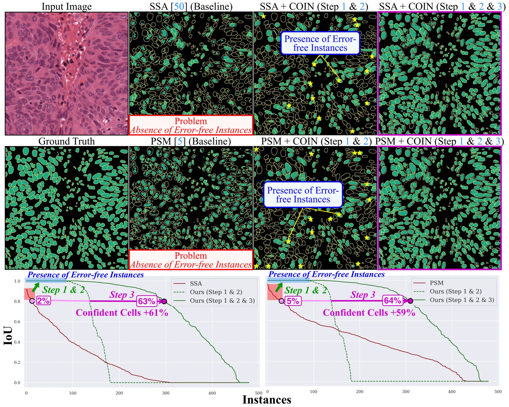
The Absence of Error-Free Instances. Recent unsupervised cell instance segmentation (UCIS) methods focus on the most discriminative parts of each cell, failing to recover full boundaries. As a result, no single predicted instance matches the ground truth exactly, making any naive self-distillation impossible.
If we cannot rely on any single instance, can we still identify the most confident ones? COIN scores every prediction, keeps only the highest-confidence subset as pseudo ground truth, and recursively self-distills, growing the confident set with each iteration.
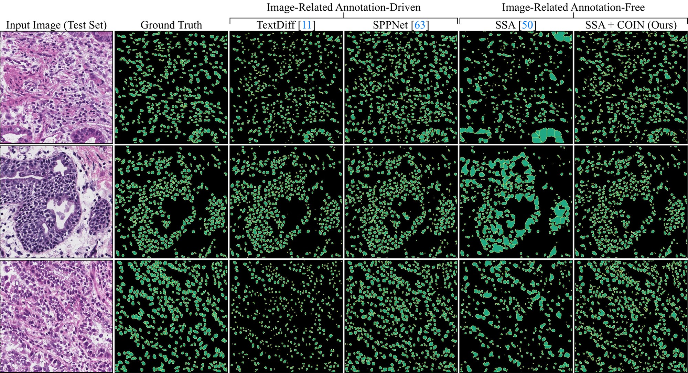
Annotation-Free, Yet Beats Supervised Baselines. Without any image-level or pixel-level annotations, COIN doubles SSA on MoNuSeg and improves PSM by at least +18 percentage points, outperforming semi- and weakly-supervised methods across six benchmarks.
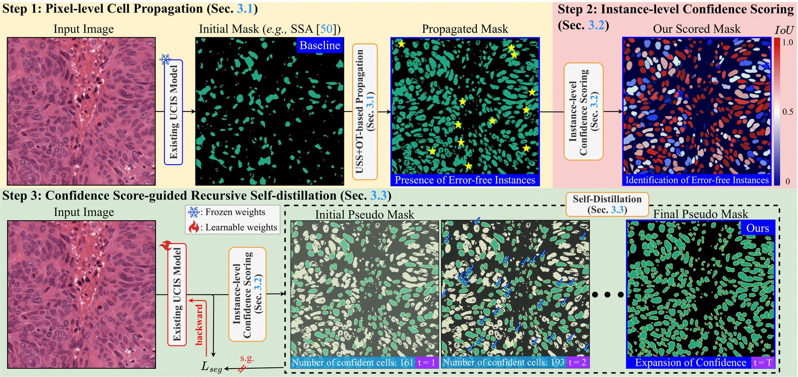
Three Steps, Zero Annotations. (1) Pixel-level cell propagation lifts sensitivity so that some predictions are guaranteed to be error-free. (2) Instance-level confidence scoring measures the agreement between each prediction and its refined mask, surfacing the most reliable instances. (3) Recursive self-distillation grows the confident set until convergence.
An unsupervised semantic segmentation (USS) module paired with optimal transport increases sensitivity to cell presence, ensuring that at least a subset of predicted instances are truly error-free and therefore usable as pseudo ground truth.
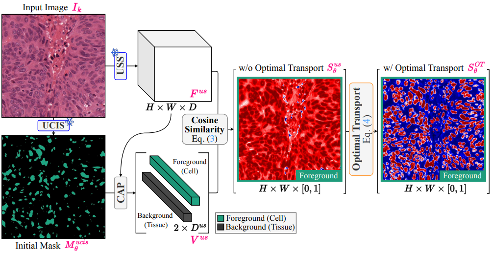
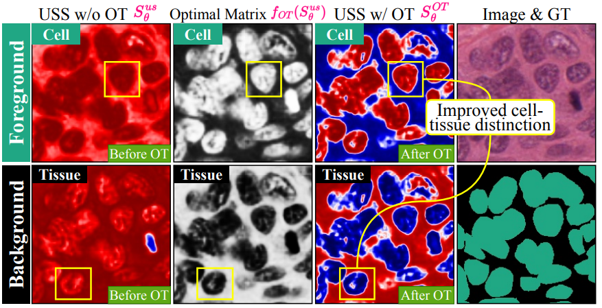
Optimal transport sharpens cell-tissue separation. Without OT, foreground predictions bleed into tissue; with OT, cell boundaries become crisp, producing a propagated mask that contains error-free instances.
Each predicted instance is re-segmented with SAM and re-scored by IoU consistency between the model output and the SAM-refined mask. High-scoring instances (e.g., 0.912) are accepted as pseudo ground truth; low-scoring ones (e.g., 0.002) are ignored or deferred to the next iteration.
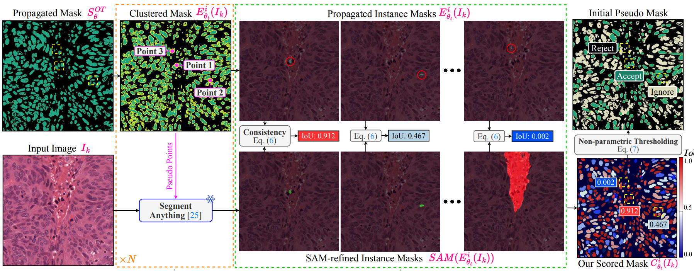
The model is retrained on the confident pseudo-GT subset, the scoring loop is re-run, and the confident set expands at every iteration (yellow arrows: existing confident instances; blue arrows: newly accepted instances at t=1, t=2). The loop converges to a model that beats supervised baselines without any annotation.
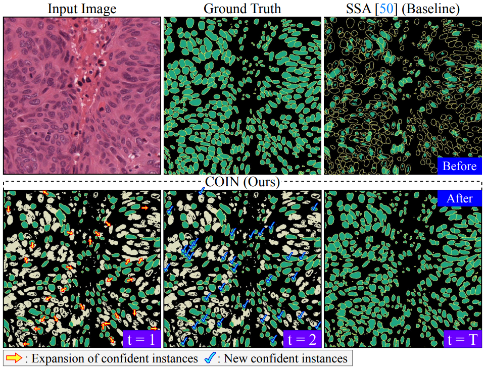
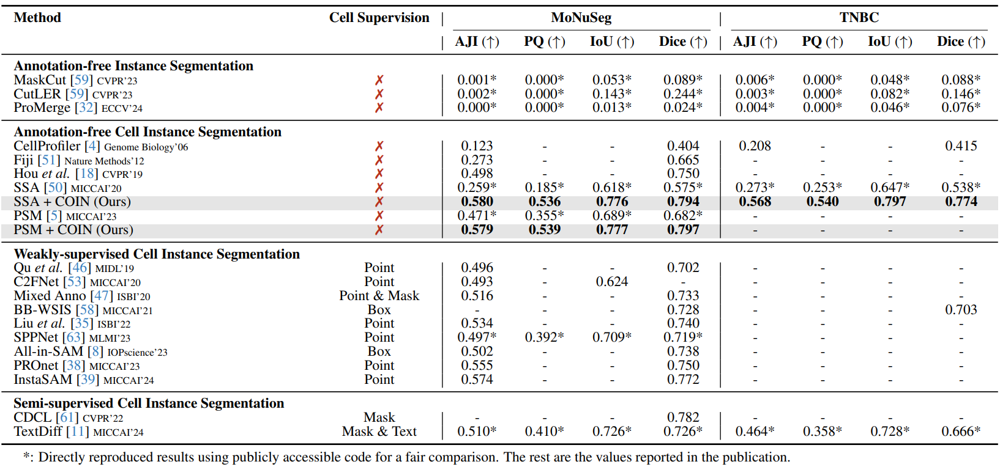
Main quantitative results on MoNuSeg and TNBC. Without any cell supervision, COIN outperforms not only every annotation-free baseline but also strong weakly-supervised (point/box) and semi-supervised competitors across AJI, PQ, IoU, and Dice.
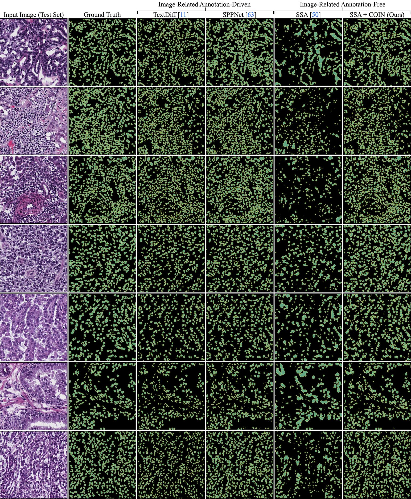
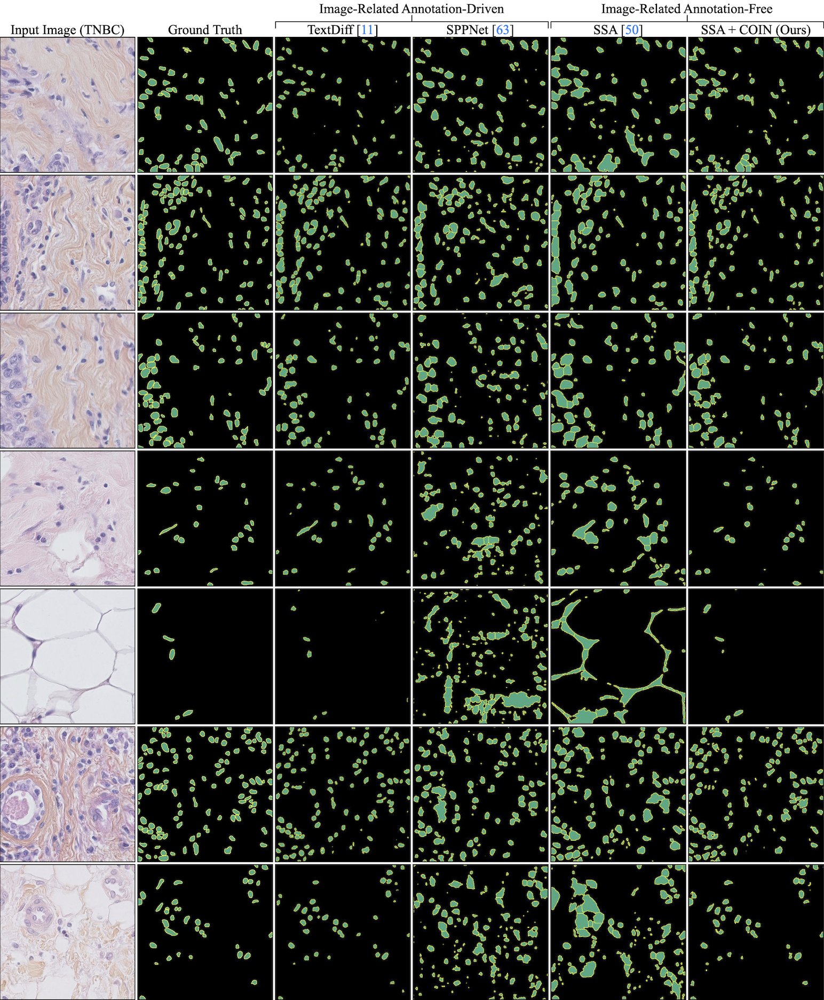
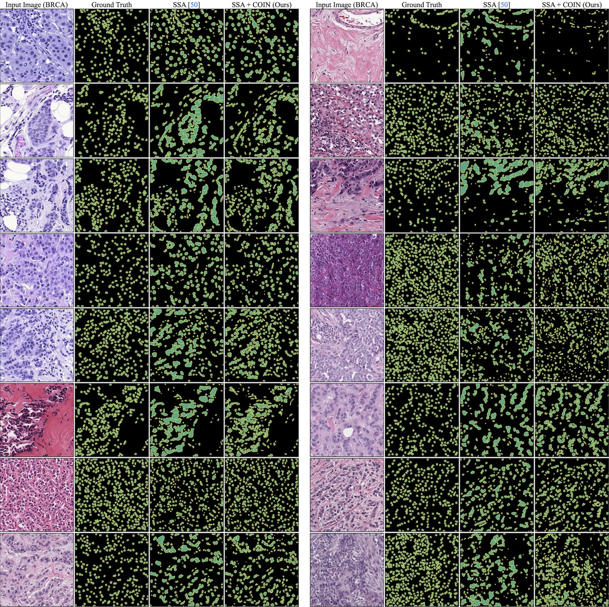
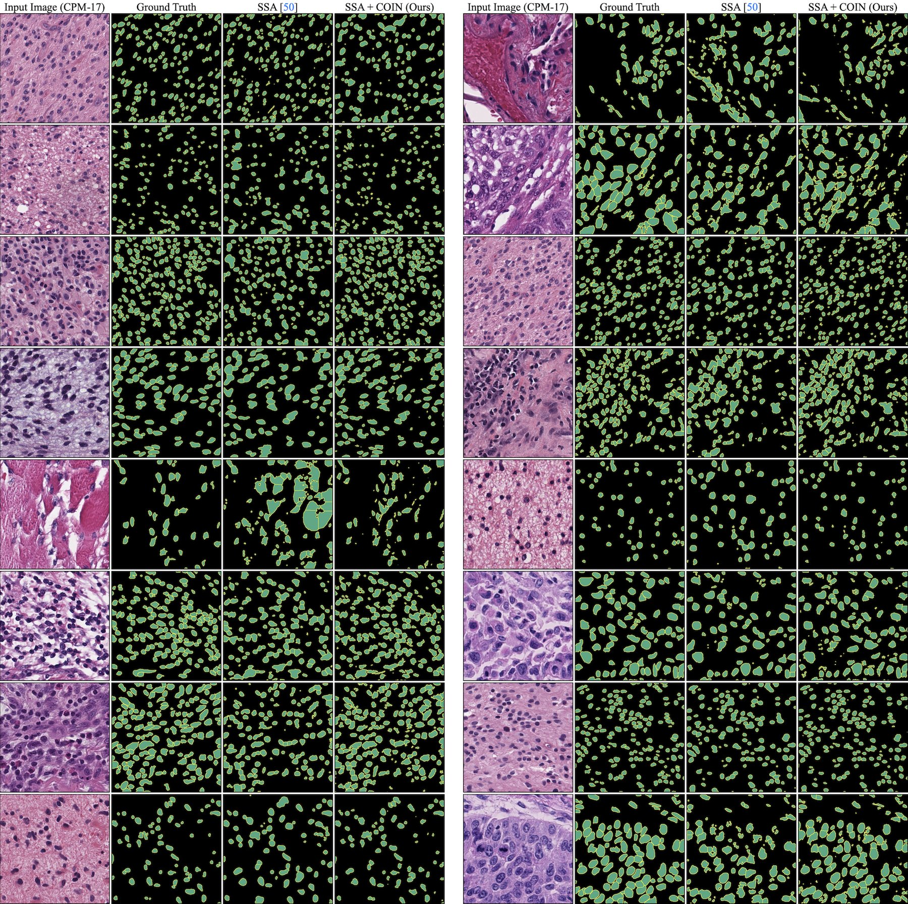
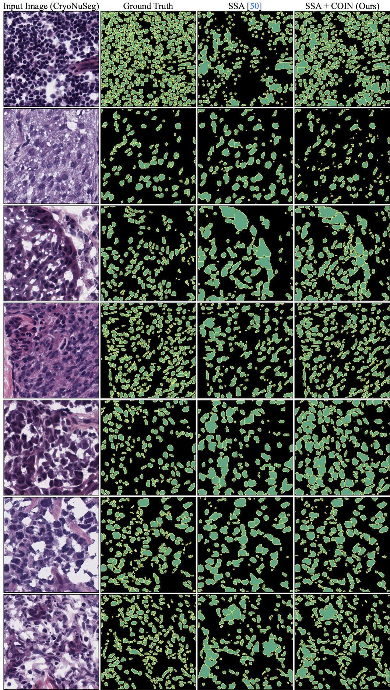
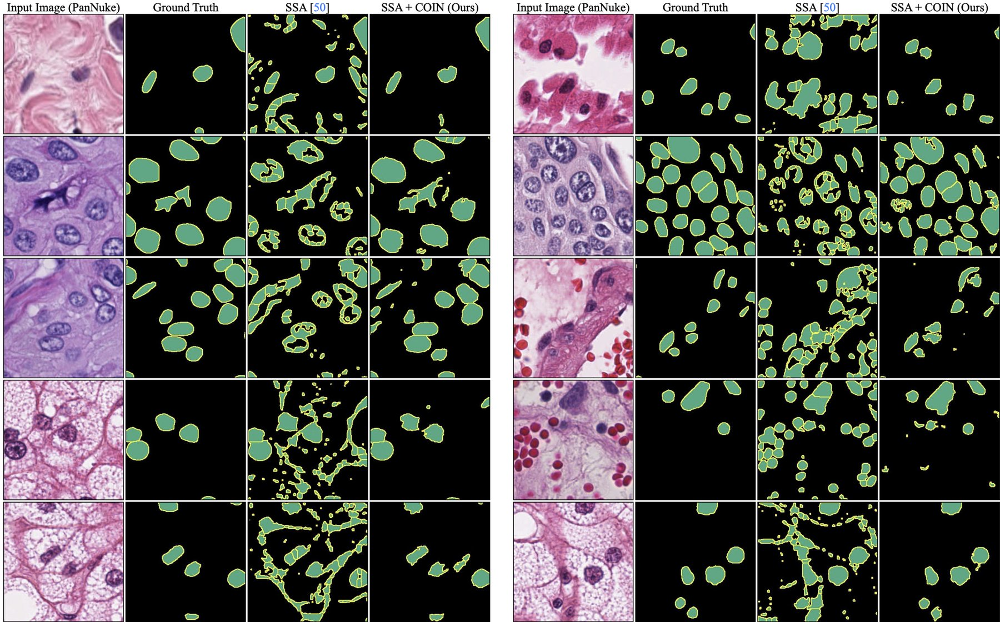
Annotation-Free Predictions vs. Supervised Baselines. COIN recovers complete cell instances across diverse tissue types and staining protocols, consistently outperforming both unsupervised and supervised competitors.
@InProceedings{Jo_2025_ICCV,
author = {Jo, Sanghyun and Lee, Seo Jin and Lee, Seungwoo and Hong, Seohyung and Seo, Hyungseok and Kim, Kyungsu},
title = {COIN: Confidence Score-Guided Distillation for Annotation-Free Cell Segmentation},
booktitle = {Proceedings of the IEEE/CVF International Conference on Computer Vision (ICCV)},
month = {October},
year = {2025},
pages = {20324-20335}
}